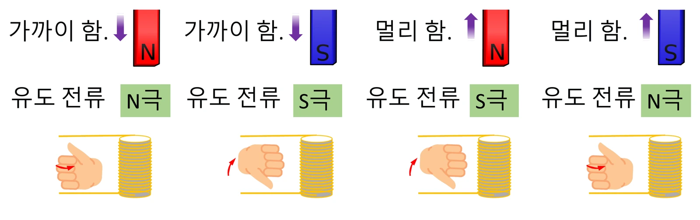

중2 과학 · 전기와 자기 · 심화 9화 「유도전류는 어느 방향으로 흐를까 — 렌츠 법칙」
9화 전자기 유도를 방향과 세기 두 축으로 검증합니다. 실험에서 자석의 속력·극·코일 감은 수를 바꿔 유도 전류 그래프를 보았습니다. 빠를수록·많이 감을수록 세지고, 극을 바꾸면 방향만 반대, 멈추면 0이었습니다. 렌츠 법칙과 패러데이 법칙을 정리합니다.
실험 데이터 되짚기
자석의 속력과 코일 감은 수를 바꿔 가며 최대 유도 전류(상댓값)를 재면 이렇습니다.
| 속력 / 감은 수 | 1 / 20 | 3 / 20 | 3 / 40 | 6 / 40 | 0 / 40 (정지) |
|---|---|---|---|---|---|
| 최대 유도 전류 (N극, 넣을 때) | +20 | +60 | +120 | +240 | 0 |
| 전류 ÷ (속력 × 감은 수) | 1 | 1 | 1 | 1 | — |
| S극으로 바꾸면 | −20 | −60 | −120 | −240 | 0 |
유도 전류는 속력 × 감은 수에 비례합니다. 넣을 때와 뺄 때, N극과 S극은 부호(방향)만 반대이고 세기는 같습니다. 자석이 멈추면 아무리 세도 0 — 얼마나 센가가 아니라 얼마나 빨리 변하는가가 핵심입니다.
유도 전류는 자기장의 변화를 방해하는 방향으로 흐릅니다. N극이 다가오면 코일은 마주보는 쪽을 N극으로 만들어 밀어내고, N극이 멀어지면 S극으로 만들어 붙잡습니다. 그래서 넣을 때와 뺄 때 전류 방향이 반대입니다. 극을 바꾸면(S극을 넣으면) 코일이 만들어야 하는 반대 자기장의 극도 바뀌므로 전류 방향만 반대가 되고 세기는 같습니다. 렌츠 법칙은 에너지 보존의 결과입니다: 코일이 자석을 밀고 당기므로 자석을 움직이려면 일을 해야 하고, 그 일이 전기 에너지가 됩니다.
교재 그림
네 가지 경우 — 코일은 늘 '방해하는' 극을 만든다

가까이 오면 같은 극으로 밀어내고, 멀어지면 반대 극으로 붙잡습니다. 오른손을 감아쥔 방향이 유도 전류, 엄지가 코일 위쪽 극이에요.
유도 기전력(전압) = 감은 수 × 자기선속의 변화율. 자석을 빨리 움직일수록, 세게 할수록, 코일을 많이 감을수록 큽니다. 자석을 멈추면 변화가 없어 전류가 0입니다. 그래서 발전소는 자석이나 코일을 계속 회전시키고, 자전거를 빨리 탈수록 전조등이 밝아집니다. 전동 킥보드·전기차의 회생 제동과 놀이기구의 자기 브레이크는 렌츠 법칙으로 속도를 줄이며 전기를 만들고, 인덕션 레인지는 빠르게 변하는 자기장으로 냄비에 유도 전류를 흘려 데웁니다.
움직여 보기
자석을 넣고 빼 보자 — 검류계 바늘은 어느 쪽으로?
N극을 넣으면 코일 왼쪽 면이 N극이 되어 자석을 밀어내고(주황 화살표), 빼면 S극이 되어 붙잡습니다 — 움직임을 방해하는 쪽(렌츠 법칙). 그래서 넣을 때와 뺄 때 바늘이 반대로 갑니다. 자석이 멈추면 바늘은 0. 빠르게, 많이 감을수록 바늘이 크게 움직여요(속력 × 감은 수, 상댓값).
기전력이 속력 × 감은 수에 비례하는 것은 패러데이 법칙이지만, 전류는 기전력 ÷ 코일 저항입니다. 감은 수를 늘리면 코일 저항도 함께 커져 실제 전류 증가는 완만합니다. 이 실험은 저항을 일정하게 둔 모형이고, 자석의 세기·코일 반지름·경로에 따라 값이 달라지며 표시 값은 상댓값입니다.
이 실험: 최대 유도 전류 ∝ 속력 × 감은 수 · 넣을 때/뺄 때, N극/S극은 부호 반대 (렌츠 법칙)
“N극이 다가오면, 코일은 마치 스스로 N극이 된 것처럼 자기장을 만들어서 밀어내려고 해. 같은 극끼리는 밀어내니까! 자석을 빼낼 때는 반대로, 코일이 S극이 되어서 자석을 끌어당기려고 해.”
심화 9화 · 지유: “무슨 규칙이요?” 피지: “유도전류는 항상 자석의 움직임을 ‘방해하는’ 방향으로 흘러. 이걸 렌츠 법칙이라고 해.”
“음... 자기장이 변하지 않으니까 전류가 안 흐를 것 같아요!”
심화 9화 · 피지의 예측 문제(자석을 넣은 채 가만히 두면?). 피지: “정답! 가만히 있으면 아무리 강한 자석이라도 전류가 안 흘러.” 민재: “자전거를 빨리 탈수록 전조등이 더 밝아지는 거구나!”
크기: 속력 2배 × 감은 수 2배 = 4배 → 240. 방향: S극이므로 반대 → −240. 같은 조건에서 S극을 빼면 +240.
만약 S극을 만들어 자석을 끌어당긴다면 자석이 저절로 가속되어 힘을 들이지 않고 전기가 생기는 셈 — 에너지 보존에 어긋납니다. 실제로는 코일이 N극을 만들어 밀어내므로 자석을 넣으려면 힘을 써야 하고, 그 일이 전기 에너지로 바뀝니다. 렌츠 법칙은 에너지 보존의 결과입니다.